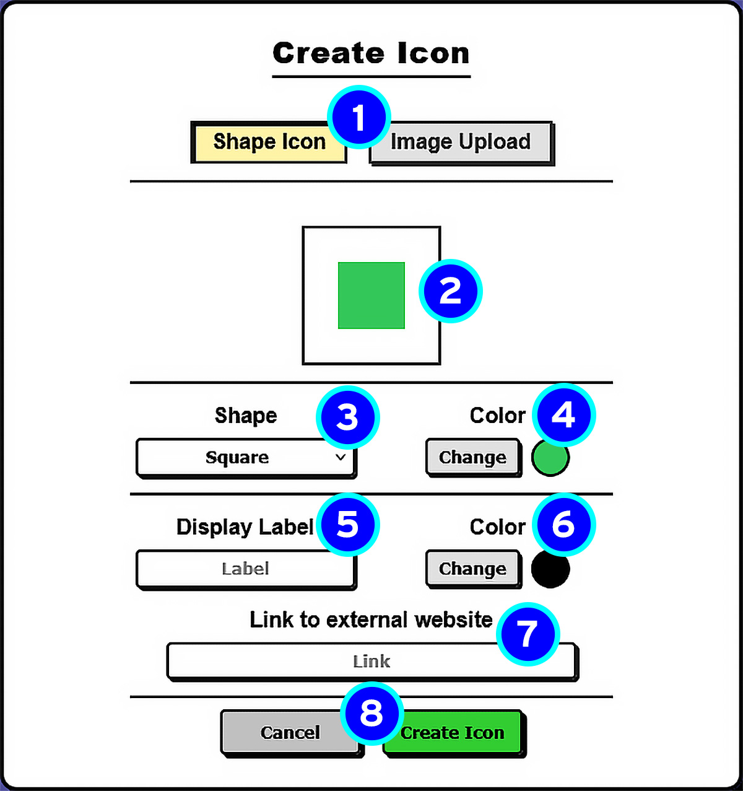
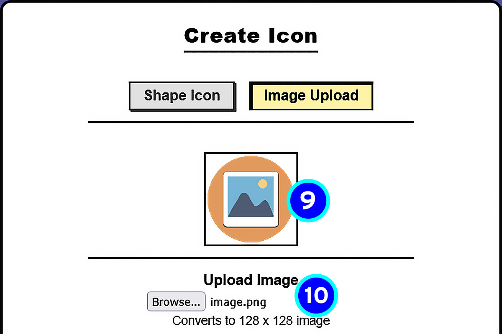
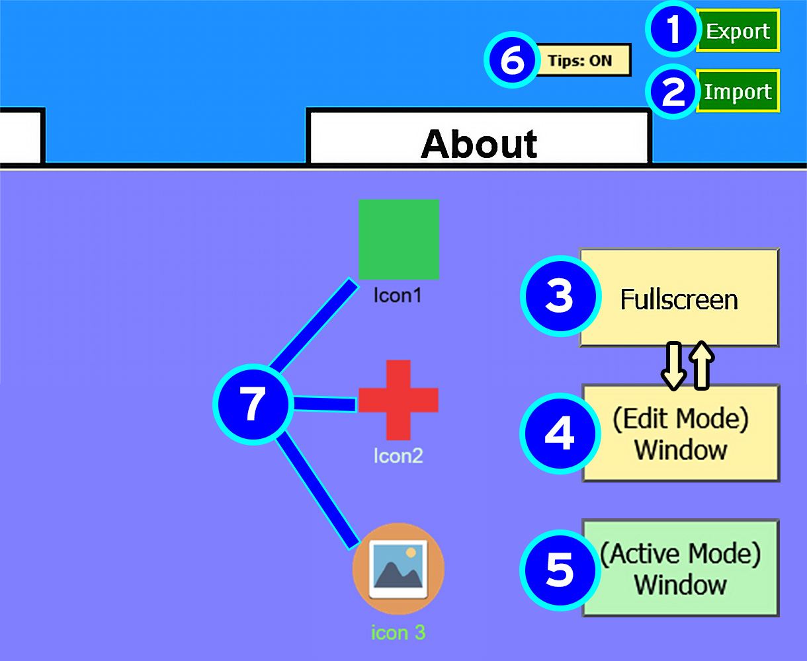
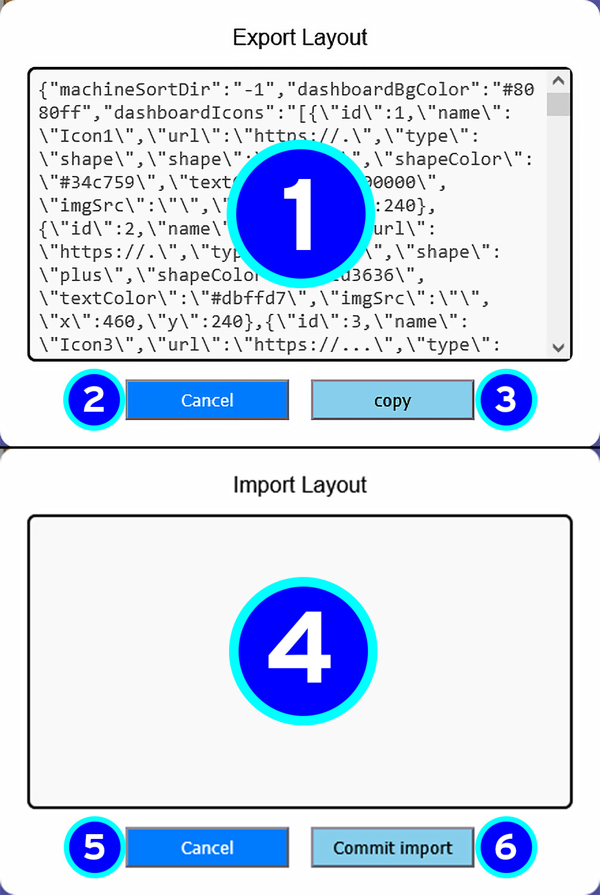

About Web Desk
Use this page as a quick guide for Web Desk tools, buttons, and pop-up menus.
Icon Pop-up Overview
This menu is used to create a new icon for your dashboard.

- Icon TypeChoose between a shape icon or an uploaded image.
- Shape PreviewShows what the shape will look like before creating it.
- ShapeSelect the shape used for the icon.
- Shape ColorChange the color of the icon shape.
- Display LabelSet the text shown under the icon.
- Text ColorChange the label text color.
- LinkAdd the website the icon should open.
- Create / CancelCreate the icon or close the pop-up without saving.

- Image PreviewShows what the image will look like before creating it. The upload is converted to 128 × 128 pixels while keeping its image ratio.
- Image SelectionOpens your file window to select your image.
Other Buttons Overview
These buttons help with saving layouts, importing data, and switching window modes.

- ExportCopies your saved Web Desk data so you can back it up or move it to another browser.
- ImportLets you paste previously exported Web Desk data back into the app.
- FullscreenExpands the dashboard area and hides the top bar and sidebar.
- Exit Full Screen, currently in edit modeExit Expanded Dashboard, returning top and side bar, showing current mode while in fullScreen as Edit Mode.
- Exit Full Screen, currently in active modeExit Expanded Dashboard, returning top and side bar, showing current mode while in fullScreen as Active Mode.
- Hover Tips ToggleGives a quicktip when hovering over icons in Active or Edit mode
- Icons These are your custom created icons displayed on the dashboard. Edit Mode: Drag icons and click to edit them. Active Mode: Click to open the link.
Export & Import Layout
Save your dashboard or load a previously saved layout.

- Export DataDisplays your current dashboard data as text that can be copied.
- Cancel ExportCloses the export window without copying the data.
- CopyCopies the export data to your clipboard.
- Import Data AreaPaste your previously exported dashboard data here.
- Cancel ImportCloses the import window without applying changes.
- Commit ImportApplies the pasted data and loads the saved dashboard.